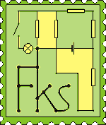

Pozostáva z 2. kategórií: mladší a starší.
FKS má dva semestre, v ka�dom tri série. Delí sa na dve kategórie - B
(pre mladších=1., 2. roèník) a A (3., 4. roèník, mô�u však rieši� aj mladší).
Ka�dá séria sa skladá zo štyroch príkladov. Po skonèení ka�dého semestra
je sústredenie pre 16 najlepších riešite¾ov oboch kategórií. Je súèas�ou
zdru�enia Trojsten.
|
|

|